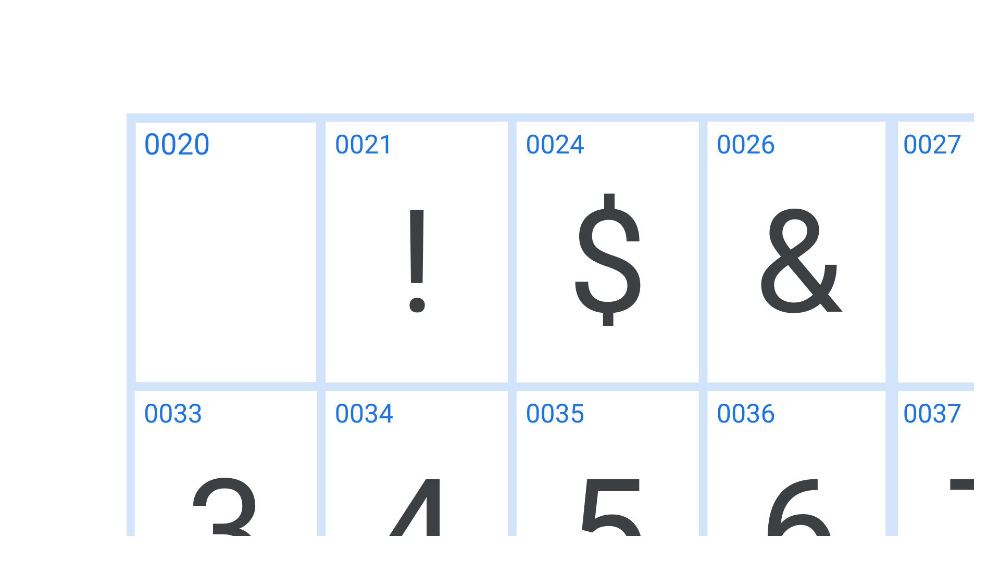

Unicode
By Google Fonts Knowledge contributors · Google Fonts Knowledge.
Original article · Source on GitHub · CC BY-SA 4.0. Text, illustrations and existing credits reproduced from the licensed Knowledge repository. Open Shelf adapted the layout and links; these adaptations are also CC BY-SA 4.0. No endorsement implied.
Every single glyph in a font has an associated unicode reference: a unique identifier that corresponds with the same character in other typefaces, regardless of the language.

Unicode defines which characters exist; any given character will have a default glyph in the font—and perhaps more. For example, a capital A, swash capital A, and small cap A would be three different glyphs, but all options for the same character of “capital A”.
In theory every font can contain a custom set of characters—numeral-only fonts are not uncommon—but, in practice, most tend to cover a few well-defined character sets.